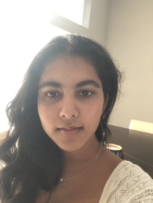
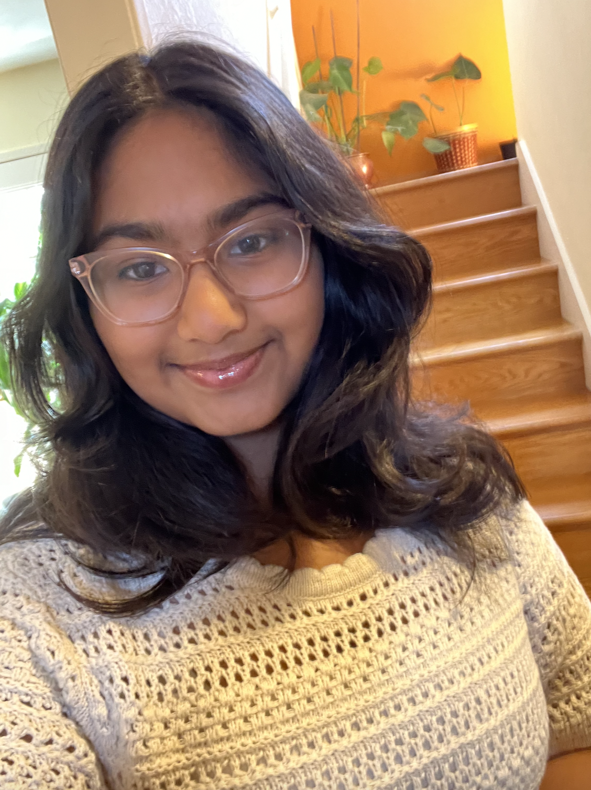
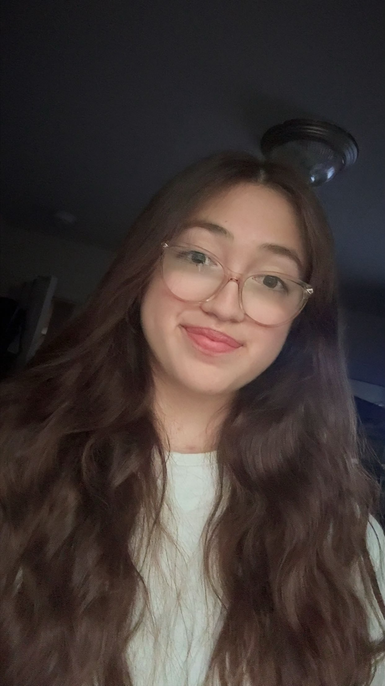

Who We Are
Our Mission
Our mission is to make comfortable and good-quality menstrual hygiene products available and accessible to students who need them and to cultivate a supportive and open culture around periods in these schools.
Our Story
We are two high schoolers from the Bay Area, Aanya Aggarwal and Laya Sunkara, who started Pads for Peers in 2023 because we experienced firsthand the stigma and lack of knowledge surrounding menstruation in our society. On top of all that, upon noticing the unmet need for period products in our area, we felt that the issue required immediate action.
In 8th grade, for one of our classes, we were assigned with identifying an issue in society and how we, as students, could work towards solving it. Since then, after months of researching period poverty and its effects on the student population, we have been building Pads for Peers, which aims to donate menstrual products to underprivileged Bay Area schools in an effort to combat period poverty amongst students.
Our Team
Meet our team!

Aanya Aggarwal
Co-founder and President
Aanya is a junior at a Bay Area high school with a keen interest in biotechnology research and medicine. Driven by her passion for using science to positively impact women's lives, she aspires to contribute to advancements in these fields. Aanya enjoys singing, acting, cooking, traveling, and reading murder mysteries.

Laya Sunkara
Co-founder and Vice President
Laya is a junior at a Bay Area high school. Passionate about bioinformatics and business (especially investing), Laya hopes to one day run a genetics research lab. Outside of her academics, she enjoys writing songs, traveling, singing, baking cookies, making earrings, and watching detective shows.

Brianna Madrigal
Director of Digital Creation
Brianna is a junior at a Bay Area high school. She is interested in studying oncology and biology, and she dreams of one day becoming a doctor. Outside of her academics, she enjoys singing, dancing, drawing, reading, watching movies with her brother, and playing guitar.